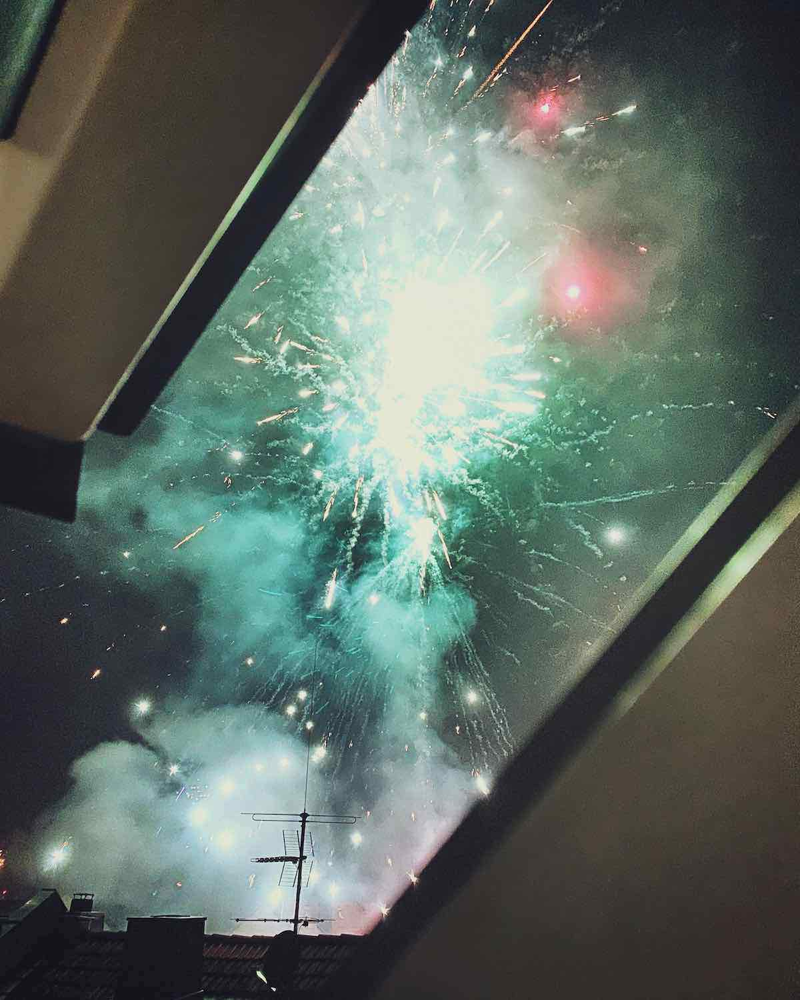

Dec 30, 2019 ⋅ 13 min read
Thoughts about 2019
If you loved it, you should write a blog post on it.
Following this motto, I decided to write down some thoughts about 2019.
2019 was a pretty big year for me. I learned a ton and I tried to be more present in the internet because I’ve learned sharing is caring. I think, even when nobody’s reading this, it’s worth it, because it’s a good summary for me and it helps me to think about my experiences. This year I’ve read through my tweets to discover which topics concerned me the most.
Accessibility
(01/2019 - 12/2019)
My interest in accessibility started after I saw my mom using a smartphone for her first time in March. I’ve read somewhere that you can only be really motivated about fixing accessibility issues if you know someone who is affected, if you can feel empathy for someone – I think this is true. Sadly. Sadly, because we all are getting older and if we build products, which are accessible, we are building them for our future selves. I think, there is simply no excuse for not building apps accessible (see my tweet).
I learned more and more about different aspects of accessibility, like accessibility specific for iOS apps but also inclusion in general... and I still learn every day! I want to spread awareness, that accessibility is not just a nice-to-have, it’s a must! It should be as self-evident to build products accessible as writing unit tests. So, I held a talk about it at our clients’ office where I gave my best to change the mindset about who needs an accessible app and how important it is to build an app for everyone. The main target group of this talk was people from our business and lead team. See my slides about it on speakerdeck.
I received great feedback. Some of the attendees didn’t even know about the accessibility features in iOS and they found it really important to learn about this topic. So, I put my words into my very first blog post to reach one or two more people. I was (and still am) so proud!
Today is Global Accessibility Awareness Day #GAAD. It’s therefore a perfect time to release my first blog post about why you should build apps for everyone. https://t.co/GcJNbGyZfd
— Feli #DieHimmelstraeumerin (@felibe444) May 16, 2019
The post was published on medium and on the website of my company on the Global Accessibility Awareness Day #GAAD.
By the way, I highly recommend reading the articles of 24Accessibility! Every day in December they’ve published an article about accessibility with very diverse topics. What I loved most about it, that I could discover so many new people who are accessibility lovers. It’s so good to see that there are actually many people out there, who also want to spread awareness and who share their experiences!
Cineaste App
(01/2019 - 12/2019)
For those who don’t know about my relationship to this app. I’m a contributer on GitHub and I love working on it, because I can decide on which features I’m working next or just try out some iOS features, which I always wanted to learn.
I had the plan to update the layout for all screens for a long time and on the beginning of this year, I could finally implement the new designs. I like it much better now and it was so much fun to design screens on my own. See these pull requests with some screenshots for the difference: Update Search View #74, Update Movie Detail Layout #82
When I implemented the layout changes, I also made everything work with Dynamic Type and Voice Over. Surprisingly, it took me only half a day to make the layout work completely without any warnings on small and on large devices with small and large fonts. So, I’ve learned, it’s better to do it correct one time, instead of having problems with different device sizes every time!
Took me nearly half a day, but I built the new search layout in Cineaste to *truly* support dynamic type – without any constraint warnings or broken layouts on a small iPhone 5 with iOS 10 as well as on an iPhone X with iOS 12 with small and extra large system fonts! So proud! pic.twitter.com/zqym3x85oR
— Feli #DieHimmelstraeumerin (@felibe444) March 9, 2019
We tested the iOS App on an event called "Usability Test-Essen". This event takes part in many cities in Germany. On one evening, a handful of testers test your product with some scenarios you give them. It was very interesting to see what was easy to understand for the tester and what they didn’t even discover. It was an exhausting but amazing experience! I highly recommend to test your own product but also to test other products.
#happyFeli! What a great evening with you guys 🙌
— Feli #DieHimmelstraeumerin (@felibe444) April 11, 2019
My number one observation from yesterday: nearly nobody wants to swipe. ☝️ Well, this is good to know. pic.twitter.com/CJPECdslJW
With the release of iOS 13 in autumn there came a lot new features. Mainly interesting for the user – Dark Mode! Actually, I feared implementing it, because I had no plan how a dark design of Cineaste should look like and it looked like a lot of work... So, I disabled Dark Mode for iOS 13 in the first step. After a few months, I decided to go for it again. Even Instagram had its own dark mode, so I can do it as well. I started to make a design first, to have a plan for the implementation and to think about how it could look like. It was way easier than I thought it would be and it looked kinda good. I got super motivated when I had a screenshot of the new design on my phone. I wanted to start implementing it right away. It only took me two evening/nights to implement the new design. To be able to test the implemented dark mode on my device, was such a great feeling. I wonder why I feared starting with it at all. I looove the new dark mode 😍
See my tweets about it and the pull request with some screenshots, if you are interested how it was implemented.
Sketchnoting
(11/2018 - 12/2019)
Sketchnoting came into my life in November 2018. I was at DACHFest and took part in a sketchnoting workshop with @lariki and @MiBLTl. DACHFest was the first conference where I tried to sketchnote every talk. I found out quickly how much it helped me to stay concentrated during the presentations. I also liked the aspect to have easy reminders for every talk. Sketchnotes are perfect for recaps after a conference.
I visited AppBuilders in April in Lugano, CH (AppBuilders Twitter Thread) and UIKonf in May in Berlin, GER (UIKonf Twitter Thread) and sketchnoted all talks...
What can I say, I love doing sketchnotes.
After three conferences full of talks (so about 30 sketchnotes) you could see some progress, how the notes got better and better (visually). This is a pure subjective impression but they looked more like something which really should look like it looks and not some kind of random output.
Yay! My #sketchnotes of “What’s new in iOS Design” by Mike Stern. #WWDC19
— Feli #DieHimmelstraeumerin (@felibe444) June 14, 2019
Mike gives an overview about...
• dark mode
• the new iOS design system
• modal presentation and
• contextual actions
... in iOS 13. https://t.co/ag87di2fKl pic.twitter.com/yC1IBX6wp9
I talked a lot about sketchnoting at work too and especially in WWDC season, of course, I did sketchnotes of the sessions I’ve watched and showed them to my colleagues 😉 I think, it was just a matter of time, when a colleague suggested that I should do a workshop about sketchnoting at my company. I immediately declined, because I was just a beginner myself! But one day later, I said that I want to do it. Because... sharing is caring! So, I prepared my very first workshop (see tweet). I was so scared but also excited, because sketchnoting is simply my favorite. I’m so glad, that I got so much support at my company!
I was overwhelmed by my feeling after I did my first workshop in August. Everybody liked it and I remember like it was yesterday, that I wanted to scream out loud, that I did it and wanted to tell everybody about it with a big, big smile on my face.
✅ First Workshop
— Feli #DieHimmelstraeumerin (@felibe444) August 16, 2019
✅ Fun Fun Fun
✅ Chaos on Desk
✅ Attendees Happy
✅ Me Happy#sketchnoting at @adorsys pic.twitter.com/u8NuCgF2zP
In August/September, I made one sketchnote of every day of my vacation, even though I never was a diary writer. Especially on vacation, I often have the feeling I’m overwhelmed of all the impressions that I forget what I experienced over the day. Sketchnotes help me to think about what happened and to calm down after a long day. If you are interested how a sketchnote of vacations can look like, you can watch a small video of my sketchnotes in this tweet.
I also had my first sketchnoting "job". I was asked to make sketchnotes for my company at the "Agile Leadership" conference in October in Nuremberg. Why not giving it a try, if some of the sketchnotes are worth sharing, we could share it with the companys twitter account. The topic of the conference was nothing iOS related, so I felt a bit uncomfortable with sketchnoting about something with so many abstract words... How could you do a sketch about "agile transformations"?! Mh, but I was ready for this challenge and you can see the sketchnotes in this thread. What I loved most, was that sketchnoting was an ice breaker at this conference. Some people talked to me just because they saw me taking notes and asked me questions about it.
In the second and third workshop about sketchnoting in my company in October and December I could try out different workshop elements like some new sketching excercises, like sketching your neighbour with your eyes closed. This was so fun and with these little challenges it felt a lot more like a workshop instead of a talk. See my tweets of the second and third workshop.
A Project In Two Years
(01/2018 - 12/2019)
I am now in the same project at my company for two years. It’s a project where I was a developer from the start of the project. It was very interesting to see how a project changes over the time. From a prototype over never-ending-bug-fixes to – finally – a product which will be released on the AppStore.
What I’ve learned
- Working in a mono repository needs some contribution guidelines.... but not everybody likes or even reads those rules
- Working with ~20 developers is very different from working alone in a repository
- Some people want to stick to "their" technology
- Working in a cross functional team (with frontend and backend developers) instead of component teams (one iOS team, one frontend team, etc.)
- You don’t have to work on your own, just because you’re the only iOS developer
- Planning the implementation of a feature together with backend and frontend developers creates similar development concepts and helps in better understanding
- Every developer has different ideas of working with git
- Making a release from CI
What I’m proud of
- Giving a presentation about how to work with git
- Giving a presentation about why accessibility matters
- Writing a blog post about why accessibility matters
- Introducing other developers to iOS
Hacktoberfest
(10/2019)
This year in October, I participated in Hacktoberfest. The goal was to submit at least four pull requests to open source projects. The hard part wasn’t the contribution but to find interesting projects where I wanted to contribute. I made it and received a t-shirt and stickers. This is definitely the first "tech" shirt I wear with pride!
Hyped by all the open source work out there! I'm feeling so much more motivated to contribute to the community than usual 🙌 #Hacktoberfest #Swiftoberfest https://t.co/HXoYOmi6YG
— Feli #DieHimmelstraeumerin (@felibe444) October 5, 2019
I discovered the iOS repository for the Critical Mass, called Critical Maps. It has about 80 stars in GitHub which is a very good number for an app. It was fun to contribute to the project and to receive feedback from the other contributers. One of the main contributers invited me to join their organization. Now, I can also review pull requests and merge them and discuss in their slack channel which was a pretty big deal for me, because there were a lot people I didn’t know. I love that they are so open for new contributers, it’s so fun to work with others in open source and I’m looking forward to work with them.
Advent Of Code
(12/2019)
In December, I asked some colleagues if they were interested in the Advent Of Code challenges and there were some people who were brave enough to try it. I think, these kind of challenges are way more fun when you can discuss about it with others and when you have a leaderboard where you can do your own competition.
In Advent Of Code you have to solve two challenges every day. To solve these little puzzles was the very first thing I wanted to do after I woke up, so I was able to complete the first challenges before going to work. It was so fun to chat with other people about the different puzzles and to discuss different strategies.
Today’s #adventOfCode made me forget to eat breakfast before going to work 😅 ... but I liked the puzzle!
— Feli #DieHimmelstraeumerin (@felibe444) December 3, 2019
Day after day the challenges got more complex and it took way more time to solve them... Day ten was the first day, where I couldn’t complete both puzzles on the same day. It was the start of losing interest.
Even though I didn’t complete all puzzles (didn’t even try the last days 🙈), I learned so much about Swift and that I shouldn’t give up until I’ve at least tried. Even though these kind of programming puzzles are hard for me, I can do it!
Annual Commit Report
(01/2019 - 12/2019)
It’s a tradition to analyze your annual commit history at the end of December. The report is a mix of professional and private work. I worked a lot on weekends but my side projects are way too interesting to stop doing it. 🙈 There are so many things to learn and to try out!
Credits for the script go to @markusfisch
In 2019 Feli made 887 commits in 27 projects.
The average length of a commit message was 56 characters.
Commits per weekday
Monday 180 ***********************************************************
Tuesday 117 **************************************
Wednesday 132 *******************************************
Thursday 101 *********************************
Friday 101 *********************************
Saturday 144 ***********************************************
Sunday 112 ************************************
Commits per month
Jan 42 *************
Feb 43 **************
Mar 53 *****************
Apr 56 ******************
May 29 *********
Jun 45 **************
Jul 128 ******************************************
Aug 49 ****************
Sep 27 ********
Oct 110 ************************************
Nov 126 *****************************************
Dec 179 ***********************************************************
Lines added (+) and removed (-) per weekday
Monday -1580 -----
Tuesday 8369 +++++++++++++++++++++++++++
Wednesday 16658 +++++++++++++++++++++++++++++++++++++++++++++++++++++
Thursday 6186 ++++++++++++++++++++
Friday 7983 +++++++++++++++++++++++++
Saturday 7254 +++++++++++++++++++++++
Sunday 5538 +++++++++++++++++
Lines added (+) and removed (-) per month
Jan -6631 --------------
Feb 20154 ++++++++++++++++++++++++++++++++++++++++++++
Mar 4428 +++++++++
Apr -409
May 985 ++
Jun -2871 ------
Jul 11976 ++++++++++++++++++++++++++
Aug 5224 +++++++++++
Sep 958 ++
Oct 605 +
Nov 7536 ++++++++++++++++
Dec 8453 ++++++++++++++++++
Top 3 words in commit messages (ignoring words up to three letters)
Update 233 ***********************************************************
Remove 110 ***************************
with 53 *************
That’s it! See you in 2020 and happy new year 🙂
